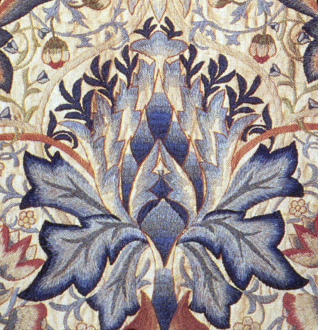
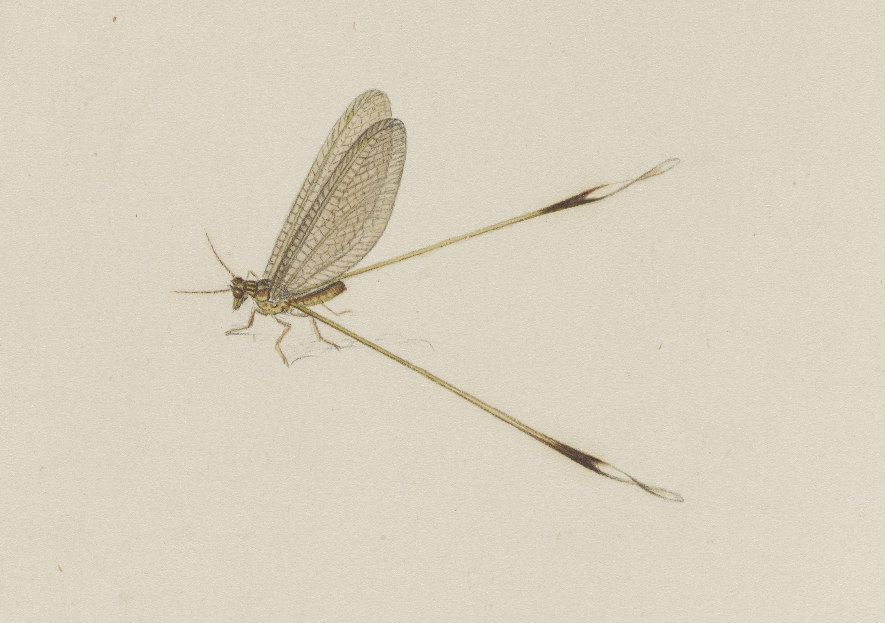

1. The Monochromatic Paradox: Creating Contrast Without Color
In polychrome embroidery, visual separation is achieved effortlessly through color contrast—a scarlet rose petal stands out clearly against emerald foliage. In whitework and Broderie Anglaise, however, the embroiderer operates under a strict monochrome discipline: white thread upon white fabric.
Without color, visual dimension and botanical legibility can be created solely through two physical mechanisms: the negative space of pierced eyelets, and the three-dimensional shadow relief of raised satin stitching (passé empiétant en relief).
If satin stitches are simply sewn flat onto the ground fabric, they appear thin, lifeless, and easily crushed during wear. To produce the luxurious, porcelain-like relief seen in nineteenth-century French and Victorian royal whitework, master embroiderers construct a hidden internal scaffold beneath the surface stitches: the padded underlay.

2. The Padded Underlay Architecture: Foundation Running Stitches
Before a single decorative satin stitch is placed across a flower petal or monogram scroll, the embroiderer outlines the shape using fine split stitches. This perimeter outline establishes a rigid mechanical boundary that prevents the subsequent surface stitches from sinking into the soft batiste ground.
Next, the interior void of the petal is filled with multiple layers of padding stitches. In traditional French whitework, this padding consists of rows of running stitches or seed stitches laid down perpendicular to the intended direction of the final satin stitches.
In high-relief areas—such as the rounded center of an acanthus leaf—up to three tiers of graduated padding are stacked atop one another, forming a miniature convex dome. The final satin stitches are then laid across this dome at a ninety-degree angle, wrapping completely over the underlay like silk ribbons over a sculpted mound.
3. Comparative Matrix: Stitch Relief & Dimensional Retention
To assess how underlay construction influences visual relief height, shadow cast, and resilience after pressing, our research atelier conducted comparative mechanical compression testing across four standardized petal samples.
| Stitch Construction | Internal Armature | Unpressed Relief Height | Post-Press Relief Height | Specular Highlight Lux | Artisanal Rating |
|---|---|---|---|---|---|
| Triple-Padded Satin Over Split Stitch | 3-Tier Cotton Underlay | 1.85 mm Relief | 1.62 mm (87.5% Retention) | 420 Lux (Porcelain Sheen) | Master French Haute Couture |
| Single Padded Satin Over Cordonnet | Single Cotton Core Cord | 1.25 mm Relief | 1.08 mm (86.4% Retention) | 340 Lux | Victorian Heirloom Standard |
| Flat Surface Satin Stitch (No Padding) | None (Direct to Cloth) | 0.45 mm Relief | 0.15 mm (33.3% Retention) | 180 Lux (Dull Reflection) | Commercial Grade Embroidery |
| Computerized Multi-Head Tatami Fill | Interlaced Underlay Grid | 0.60 mm Relief | 0.30 mm (Flat, Cardboard Feel) | 120 Lux (Matte Synthetic) | Mass Market Garment Fill |

4. Thread Twist Dynamics: Specular Reflection and Light Scattering
The optical brilliance of whitework embroidery is governed by the physics of specular light reflection. Cotton and silk threads are spun with a specific mechanical twist—either 'S-twist' (counter-clockwise) or 'Z-twist' (clockwise).
When light strikes a tightly twisted thread, the helical fibers scatter photons in random directions, producing a dull matte finish. Conversely, when an embroiderer utilizes a soft, low-twist floss—such as coton à broder or untwisted filament silk—and lays down the stitches in strictly parallel lines, the individual fibers act as a microscopic array of cylindrical mirrors.
Light reflecting off the parallel fibers creates a sharp, brilliant specular highlight that contrasts dramatically with the velvety matte ground of the woven cotton batiste. By subtly shifting the angle of the satin stitches across adjacent petal segments by just fifteen degrees, the embroiderer causes different petals to catch the light at different viewing angles, breathing kinetic life into monochromatic white designs.
5. French Knots and Seed Stitches: Tactile Stippling and Granular Shading
To complement the smooth, reflective domes of raised satin stitches, whitework masters incorporate granular stippling stitches—most notably French knots (points de noeud) and seed stitches (points de sable).
A French knot is formed by wrapping the embroidery floss twice around the needle shaft before inserting the needle back into the fabric a single thread away from its emergence point. When pulled taut, the coil locks into a tight spherical bead.
Clustered tightly inside flower centers or along leaf ribs, thousands of these micro-beads create a textured, light-absorbing zone that mimics the granular texture of real flower pollen. The juxtaposition of smooth reflective satin petals, open pierced eyelets, and light-absorbing French knots forms the complete textural vocabulary of Broderie Flair.